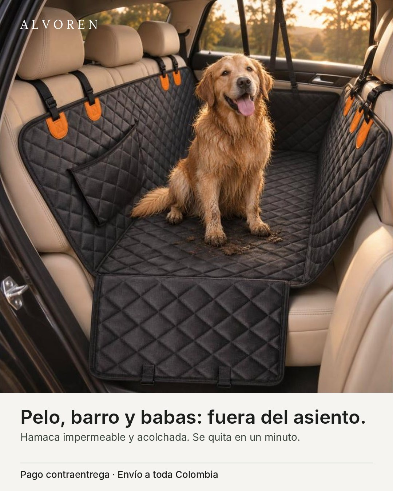
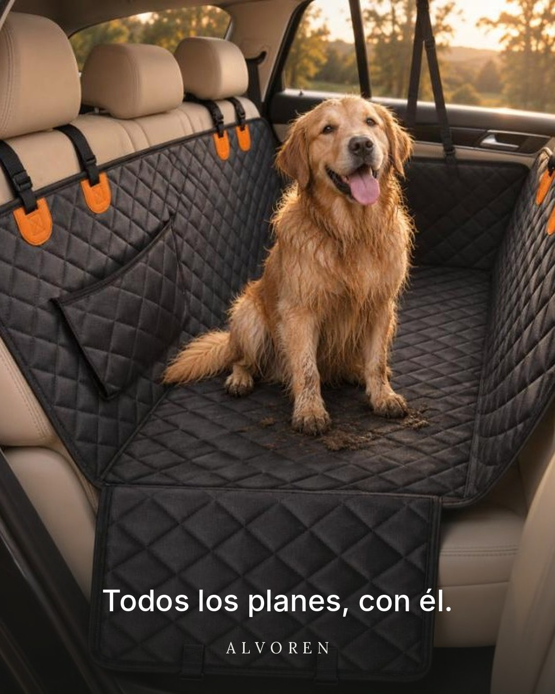
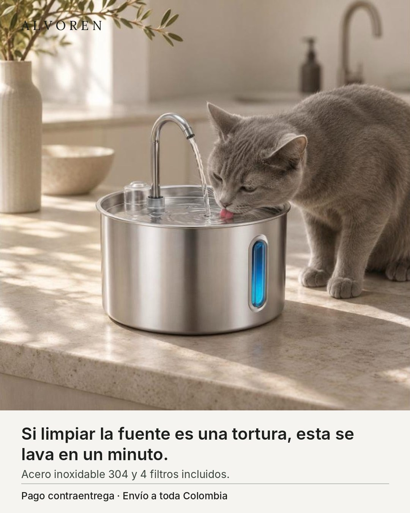
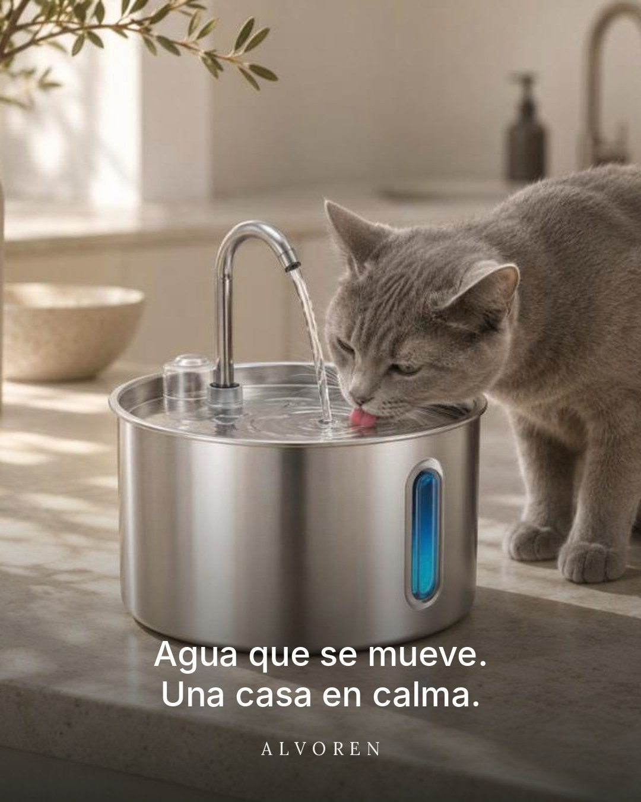
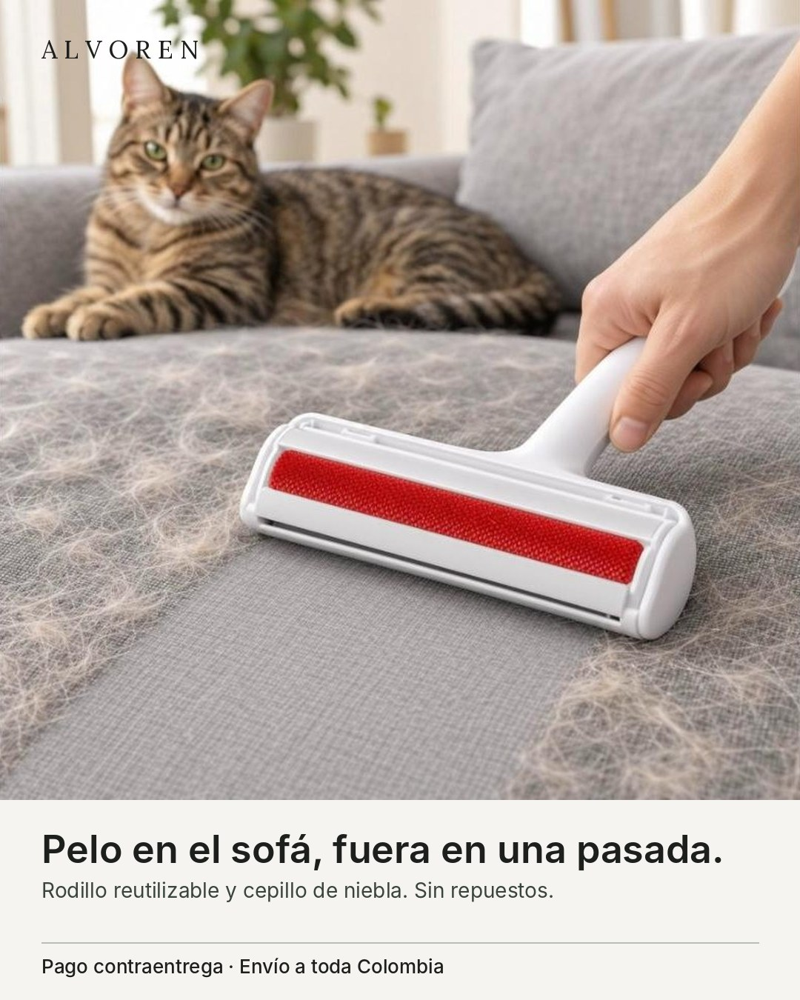
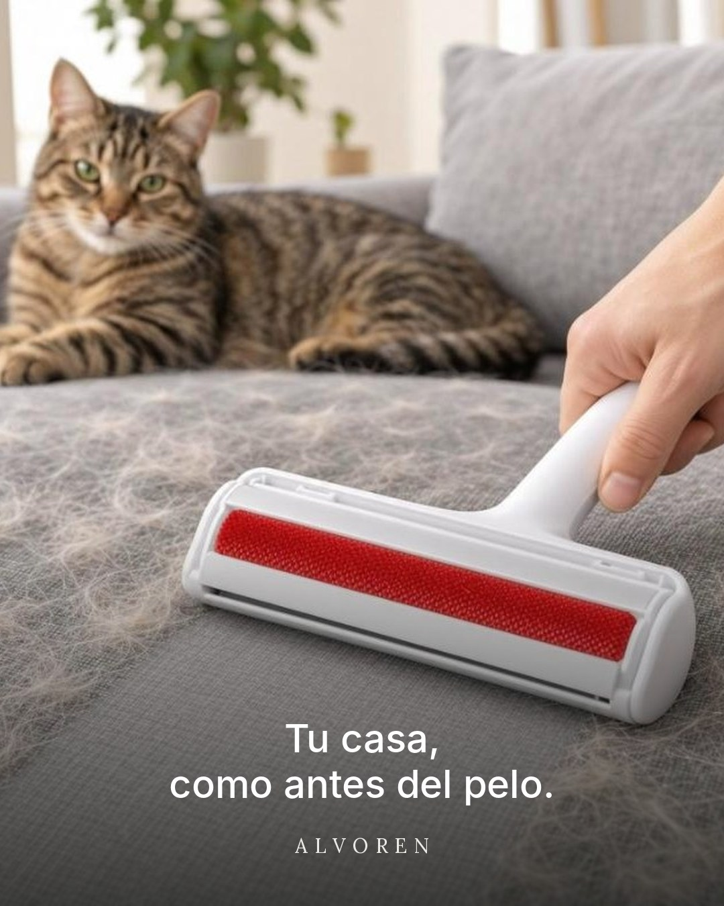

Somos tres: Sebastián, Nico y Julieth. Partimos de 3 categorías que ya son ganadoras en EE. UU. y que ya se venden en Colombia, pero no vamos a vender lo mismo que todos: cada producto ALVOREN debe mejorar algo que los compradores se quejan del líder. Validamos interés y disposición a pagar antes de fabricar. Empezamos por la hamaca. El dropshipping genérico queda como plan B.
Toca un producto: ves sus fotos, la prueba de venta en EE. UU. y Colombia, dolores y deseos del cliente, proveedores, materiales y números.
Sin comprar inventario. Las fotos son del proveedor exacto del link.
Solo cuando su versión genérica venda en la fase 1.
Revisamos 10 categorías ganadoras de Amazon EE. UU. y buscamos cada una en Mercado Libre Colombia y en los anuncios de Meta. Pasaron las que tienen ventas en los dos países y un precio que aguanta la contraentrega.
Unidades al mes en EE. UU.: estimaciones de ASINSIGHT a partir del ranking de Amazon. Ventas en Colombia: contador de Mercado Libre (ventas acumuladas), consultado por ChatGPT el 15 nov 2026. Anuncios: Biblioteca de Meta, medida por Claude.
| Producto | EE. UU. | Colombia | Coste máximo al proveedor |
|---|---|---|---|
| Hamaca impermeable para carro Fase 1 | URPOWER, hamaca impermeable (Amazon B0727Y5ZD7): ~9–10 mil u/mes · 46 mil reseñas · US$ 27,99 | Petpal, protector de asiento (Mercado Libre): +1.000 vendidos a 101.749 COP · #1 del ranking Funda protectora de asiento (Mercado Libre): +500 vendidos a 111.540 COP Protector tipo silla negra (Mercado Libre): +100 vendidos a 197.714 COP Meta Ad Library: "hamaca carro perro": ~8 anuncios de 1 anunciante (desde el 7 nov) | $56.000 |
| Fuente de acero para gatos + 4 filtros Fase 1 | Fuente de acero inoxidable (Amazon B0DDPYHHFX): ~10 mil u/mes Fuente Tomxcute (Amazon B0FJMF2T4J): ~7 mil u/mes Filtros de recambio (varias marcas): 4–6 mil u/mes | 52 BITS, acero 3,4 L (Mercado Libre): +100 vendidos a 133.790 COP Fuente de acero 2,5 L, 110 V (Mercado Libre): +100 vendidos a 142.298 COP Filtros de recambio x8 (Mercado Libre): +1.000 vendidos a 39.420 COP Meta Ad Library: "fuente de agua para gatos": ~91 anuncios de 14 anunciantes | $49.000 |
| Kit casa sin pelo Fase 1 | ChomChom, rodillo reutilizable (Amazon B00BAGTNAQ): ~20 mil u/mes · 204,7 mil reseñas Cepillo de niebla para gatos (Amazon B0FGPLYLXM): ~9 mil u/mes a US$ 19,99 | Cepillo de niebla (Mercado Libre): +500 vendidos a 17.524 COP Meta Ad Library: "cepillo vapor mascotas": ~42 anuncios de 7 anunciantes, uno desde jun 2025 Meta Ad Library: "rodillo quita pelo": ~10 anuncios de 4 anunciantes | $34.000 |
| Hamaca ALVOREN a medida Fase 2 | Quejas recurrentes de URPOWER en reseñas: ajuste universal imperfecto, aberturas del cinturón mal situadas, costuras y correas que ceden | Se valida con la fase 1 | $69.000 |
| Rope-Lock Fase 2 | Taglory, correa de cuerda (Amazon): ~8–10 mil u/mes a US$ 8,99 · 28.452 reseñas · #3 en correas | Correa de cuerda (Mercado Libre): +500 vendidos a 21.061 COP | $65.000 |
| Fuente ALVOREN sin rincones Fase 2 | Veken, fuente para gatos (Amazon): ~40 mil u/mes (dato de ChatGPT) Quejas recurrentes de Veken: ruido con poca agua, suciedad en rincones, bomba difícil de limpiar | Se valida con la fase 1 | $65.000 |
Con contraentrega cada pedido carga unos 65.000 COP fijos (flete, empaque, rechazos y publicidad). Si el cliente lleva 2 unidades en un mismo pedido, ese coste se reparte y la ganancia por pedido se multiplica. Descuentos acordados con ChatGPT: 12 % en la hamaca x2 y 10 % en la fuente y el kit x2. Sin estrellas, reseñas ni precios tachados inventados: el único ahorro que mostramos es el real del pack.
| Pack | Precio | Queda por pedido | Margen neto proyectado |
|---|---|---|---|
| Hamaca x1 | $169.900 | $28.213 | 19,8 % |
| Hamaca x2 (recomendado) | $299.000 | $82.664 | 32,9 % |
| Hamaca x3 | $418.000 | $129.334 | 36,8 % |
| Fuente + 4 filtros | $159.900 | $20.510 | 15,3 % |
| Fuente + 8 filtros (recomendado) | $189.900 | $35.620 | 22,3 % |
| 2 fuentes + 8 filtros | $287.800 | $66.036 | 27,3 % |
| Kit casa sin pelo x1 | $129.900 | $17.733 | 16,2 % |
| Kit x2 (recomendado) | $233.800 | $67.771 | 34,5 % |
Fase 1: fotos reales del proveedor del link, mismo artículo y color. Fase 2: renders de concepto (son productos que todavía no existen). Toca uno para abrirlo.
Hechos con IA a partir de las fotos reales del proveedor, sin cambiar el producto. Así se prueba la demanda antes de comprar nada.






Una página de venta por producto, con la misma estética. Las de la fase 1 tienen pedido contraentrega; las de la fase 2 son lista de espera, para medir interés antes de fabricar.
| Condición | Para probar | Para escalar |
|---|---|---|
| Margen neto con el CPA previsto | ≥ 12 % | ≥ 20 % |
| Margen neto si la publicidad sale un 40 % más cara | ≥ 0 % | ≥ 10 % |
| CPA máximo que aguanta ÷ CPA previsto | ≥ 1,5 veces | ≥ 1,7 veces |
| Precio ÷ coste del producto | orientativo ≥ 2,5 | con datos reales |
Nace de la propuesta de Nico (15 nov): usar los más vendidos solo como orientación y ganar con identidad propia. ChatGPT y Claude la analizaron y quedó así: la inversión en producto es consecuencia de la validación, nunca el punto de partida. El dropshipping genérico pasa a ser plan B. Foco: la hamaca; la fuente y el kit quedan como alternativas, sin repartir presupuesto.
Un solo nombre propio, elegante, que suene a casa de diseño y no a tienda de mascotas. Claude y ChatGPT propusieron 10 nombres cada uno, se criticaron entre sí y dejaron 3 finalistas. Después un panel de tráfico frío votó.
Diseñado para permanecer.
«Diseñado para permanecer.»
Sonido de casa de diseño, sobrio y unisex. Funciona igual en una placa metálica, una caja o una etiqueta de lino. No encontramos ninguna marca comercial con ese nombre.
Dominio: alvoren.co y alboren.co disponibles · alvoren.com ocupado
«Forma. Función. Permanencia.»
Corto, fácil de decir y el más recordado bien escrito. Pero suena frío y técnico: en el panel muchos pensaron en tecnología o autos.
Dominio: vanrel.co disponible · vanrel.com ocupado
«La belleza de lo cotidiano.»
El más delicado y el que más lujo transmite, pero ya existe una marca de belleza Iselle y casi la mitad duda al pronunciarlo.
Dominio: iselle.com ocupado
Un agente de IA simuló a 30 personas de Bogotá, Medellín, Cali, Barranquilla y Bucaramanga (22–50 años, dueños de perro o gato) que nunca habían visto la marca. Cada una vio los 3 nombres 3 segundos, sin logo, y 5 minutos después tuvo que recordarlos. Es una simulación, no personas reales: la semana 2 se repite con 20–30 personas reales (test de 5 segundos).
| Métrica | ALVOREN | VANREL | ISELLE |
|---|---|---|---|
| Recuerdan el nombre bien escrito | 30 % | 40 % | 20 % |
| Recuerdan el nombre (aunque mal escrito) | 50 % | 57 % | 60 % |
| Dudan al pronunciarlo | 17 % | 10 % | 47 % |
| Sensación de lujo (1–10) | 6,8 | 5,4 | 7,3 |
| Confianza para pagar 170.000 (1–10) | 6,1 | 5,6 | 6,0 |
| Lo asocian a cosmética | 20 % | 7 % | 50 % |
| Lo asocian a tecnología, finanzas o autos | — | 54 % | — |
| Lo prefieren | 40 % | 23 % | 37 % |
Ejemplos de respuestas generadas en la simulación de IA; no son personas reales.
| Etapa | Cómo | Cuándo |
|---|---|---|
| 1. Test | Anuncios hechos con fotos del proveedor. Si el mismo artículo está en Dropi (stock en Colombia, contraentrega, 2–5 días), se vende normal; si no, en preventa. Nuestra marca va en la tienda, los anuncios y la tarjeta del pedido. | Semanas 1–4 |
| 2. Lote propio | Si un producto pasa la regla, pedimos 100–300 unidades a la fábrica de Alibaba con nuestro empaque, por mar, y lo despacha un operador logístico de Dropi. Ahí ya es ALVOREN de verdad. | Con 2–3 meses de ventas |
| 3. Fabricación | Prototipo, prueba de resistencia y revisión de diseños registrados de la hamaca a medida, Rope-Lock o la fuente sin rincones. | Con caja de la etapa 2 |
¿Por qué no enviar desde China pedido a pedido? AliExpress tarda 8–17 días, CJ hay que cotizarlo y no hay contraentrega; una fuente de 830 g pagaría US$ 17,5 de envío solo a EE. UU. Rompe la regla de 7–10 días hábiles.
Medido por Claude el 15 nov 2026 en la Biblioteca de anuncios de Meta (Colombia, anuncios activos). Muchos anuncios prueban actividad, no ventas rentables.
| Búsqueda | Anuncios | Anunciantes | Más antiguo | Lectura |
|---|---|---|---|---|
| rascador gato | ~160 | 13 | abr 2026 | Mucha competencia; voluminoso |
| gps mascotas | ~94 | 20 | mar 2026 | Casi todo GPS genérico |
| fuente de agua para gatos | ~91 | 14 | may 2026 | Demanda probada → elegido |
| arnes perro | ~83 | 16 | ene 2026 | Muy competido → descartado |
| aspiradora mascotas | ~66 | 9 | — | Hay anunciantes grandes (Kärcher) |
| cepillo vapor mascotas | ~42 | 7 | jun 2025 | Más de 1 año anunciando → en el kit |
| pelota interactiva gato | ~15 | 5 | — | Ticket bajo |
| rodillo quita pelo | ~10 | 4 | — | Poca competencia → en el kit |
| hamaca carro perro | ~8 | 1 | 7 nov 2026 | Casi vacío y con ventas en Mercado Libre → elegido #1 |
| arnes antitirones | ~8 | 4 | — | Sets baratos en Colombia |
| correa manos libres perro | ~4 | 2 | jun 2026 | Sin prueba de venta → reserva |
| forro silla carro perro | ~3 | — | — | Confirma el hueco de la hamaca |
Problema → demostración → resultado. Para tráfico frío.
Vínculo, estética, momentos cotidianos. Alternativo del mismo producto.
Diseñado para permanecer.
Objetos para vivir con perros y gatos, hechos para durar y verse bien en casa.
Oliva, crema, terracota, piedra y negro. Herrajes en metal mate.
| Producto | Funcional (tráfico frío) | Lifestyle |
|---|---|---|
| Hamaca para carro | ¿Tu perro deja el carro lleno de pelo y barro? La hamaca ALVOREN cubre todo el asiento trasero: impermeable, acolchada y antideslizante. Se quita y se sacude en un minuto. Pago contraentrega. | Todos los planes, con él. Viajes, parque y veterinario sin pensar en la tapicería. |
| Fuente de acero | Si limpiar la fuente de tu gato es una tortura, esta se lava en un minuto. Acero inoxidable 304, ventana de nivel y 4 filtros incluidos para 2 meses. | Agua que se mueve. Una casa en calma. Una fuente que se ve bien en tu cocina y que tu gato quiere usar. |
| Kit casa sin pelo | ¿Pelo en el sofá, en la ropa y en la cama? Rodillo reutilizable que no necesita repuestos y cepillo de niebla que saca el pelo suelto antes de que caiga. | Tu casa, como antes del pelo. Recibe visitas sin pedir perdón por el sofá. |
Vídeo de 15–20 s: los 2 primeros segundos muestran el producto en uso. Sin promesas que no hayamos probado.
Fijos: comisiones 7 % · empaque y confirmación 3.000 · cada pedido no entregado cuesta 31.000.
| Concepto | COP |
|---|---|
| Publicidad de prueba (3 productos × 600.000 máximo) | 1.800.000 |
| Muestras (plan B, solo si hacen falta) | 0–250.000 |
| Tienda Shopify Basic (1 mes, ~US$ 39) | ~130.000 |
| Dominios alvoren.co + alboren.co (US$ 48) | ~160.000 |
| Cuenta de Dropi e IA para anuncios | 0–90.000 |
| Total máximo | ~2.300.000 |
Caja aparte (estimada): 1–1,5 M COP para pagar producto y fletes de pedidos que ya se entregaron pero cuyo recaudo contraentrega todavía no llega, y para devoluciones.
| Producto | Precio | Queda por pedido | Pedidos al mes para 5 M COP de beneficio |
|---|---|---|---|
| Hamaca impermeable para carro | $169.900 | $28.213 | 178 |
| Fuente de acero para gatos + 4 filtros | $159.900 | $20.510 | 244 |
| Kit casa sin pelo | $129.900 | $17.733 | 282 |